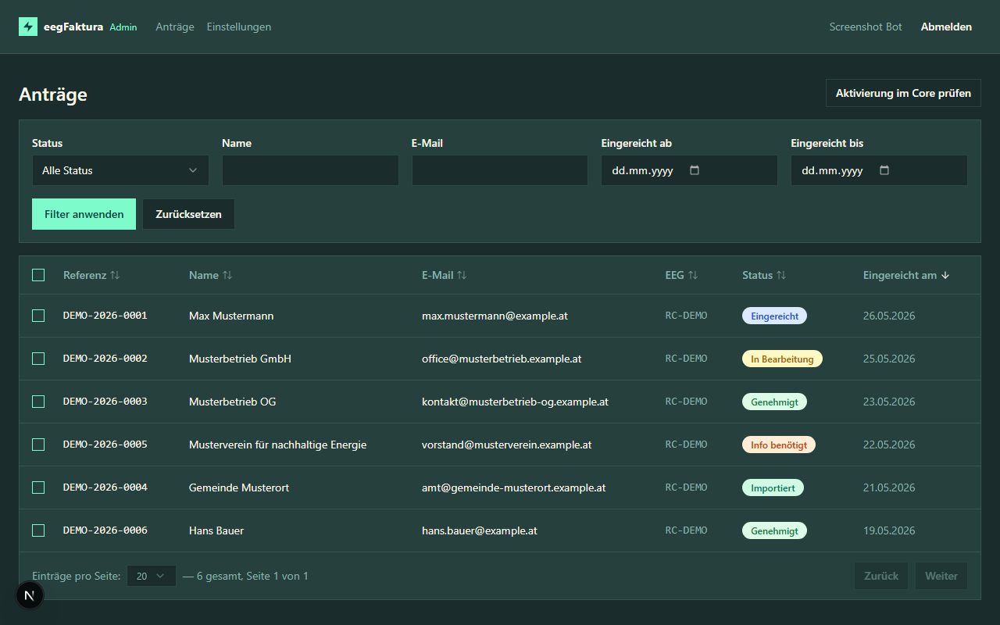
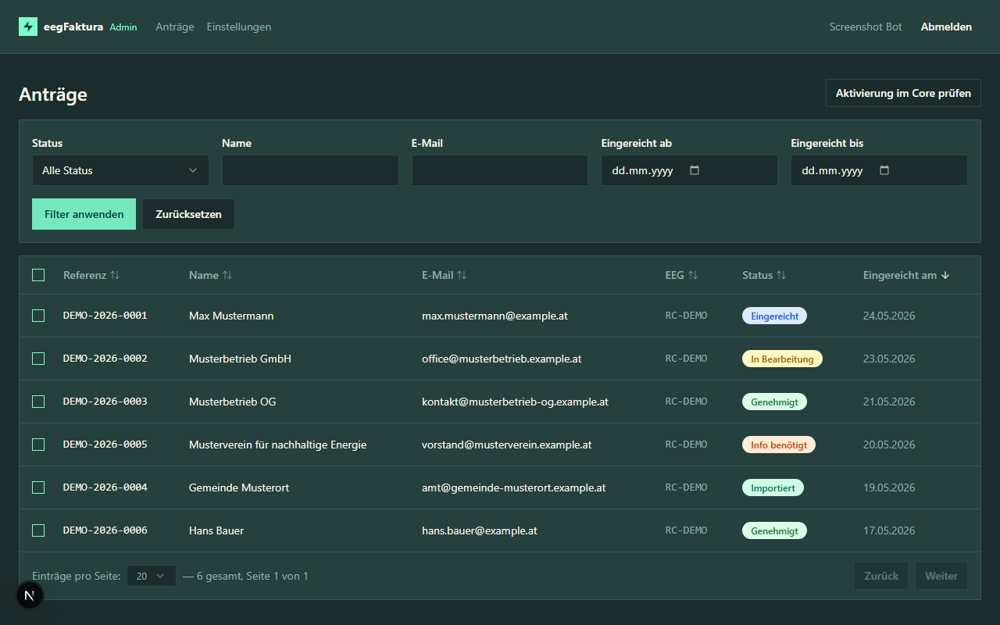
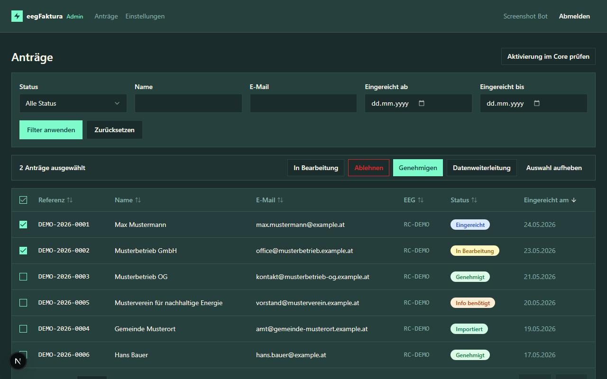
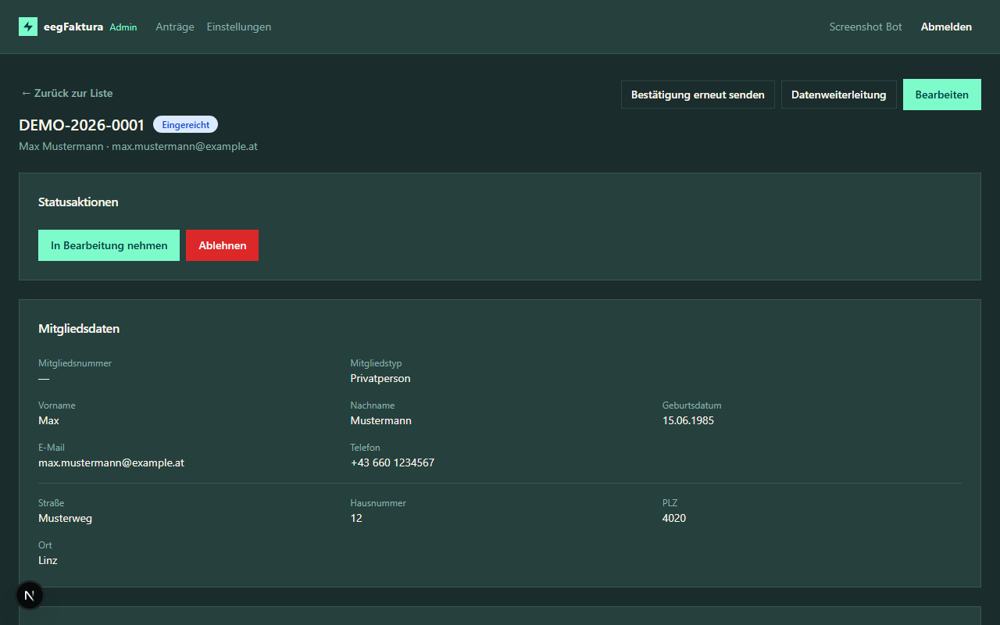
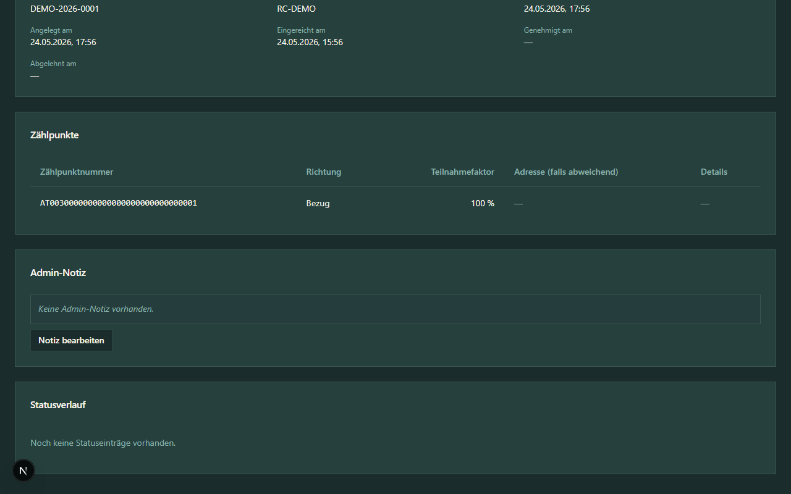
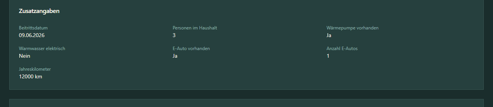
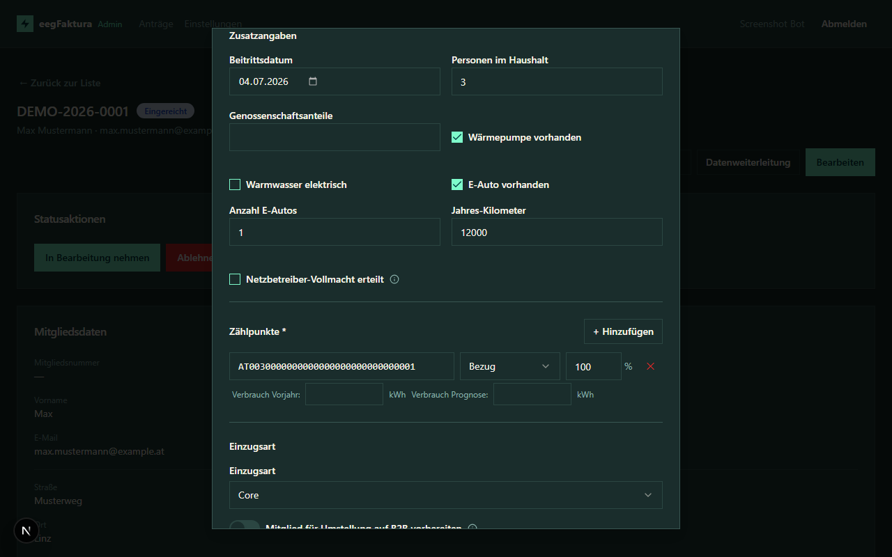

Anträge verwalten¶
Antragsübersicht¶
Nach der Anmeldung siehst du die Antragsübersicht mit allen eingereichten Anträgen deiner EEG(s).

Toolbar-Aktionen¶
Rechts oben in der Übersicht stehen dir zwei Aktionen zur Verfügung:
- „Aktivierung im Core prüfen" — fragt für alle Anträge im Status „Bereit zur Aktivierung" beim eegFaktura-Core nach. Das Auslöse-Kriterium ist pro EEG konfigurierbar (Einstellungen → „Aktivierungs-Kriterium"):
- Variante A (Default): Mitglied im Core ist auf Status
ACTIVE. - Variante B: mindestens ein Zählpunkt im Core hat
processStatein PENDING/APPROVED/ACTIVE (Netzbetreiber hat geantwortet).
Trifft das Kriterium zu, wird der Antrag automatisch auf „Aktiviert" gesetzt und das Mitglied bekommt die volle Beitrittsbestätigungs-Mail mit PDF. Toast zeigt das Ergebnis (z. B. „3 von 5 auf Aktiviert gesetzt") und die Liste wird neu geladen. - „Alle Entwürfe löschen" — erscheint nur, wenn Entwürfe existieren; löscht unwiderruflich alle nicht eingereichten Anträge deiner EEG(s).
Die Tabelle zeigt:
- Referenznummer — eindeutige Kennung des Antrags
- Name — Mitgliedsname oder Firmenname
- E-Mail — Kontaktadresse des Mitglieds
- EEG — Kurzform der zugehörigen EEG (z. B. EEG-Test). Bei Hover über die Zelle erscheint die vollständige Referenznummer als Tooltip. Sobald die Kurzform noch nicht aus eegFaktura synchronisiert wurde, zeigt die Spalte die reine Referenznummer als Fallback. Die Sortierung der Spalte erfolgt weiterhin nach der Referenznummer.
- Status — aktueller Bearbeitungsstand
- Eingereicht am — Datum und Uhrzeit der Einreichung (Anzeige in Europe/Vienna)
Die Mitgliedsnummer ist nicht in der Liste, sondern erst in der Detailansicht eines Antrags sichtbar (sie wird erst beim Import vergeben und kann alphanumerisch sein, z. B. A005).
Anträge filtern¶

Über das Filterpanel kannst du die Anträge gezielt einschränken:
| Filter | Beschreibung |
|---|---|
| Status | Nur Anträge mit einem bestimmten Status anzeigen (Entwurf, Eingereicht, E-Mail bestätigt, In Bearbeitung, Info benötigt, Genehmigt, Abgelehnt, Importiert, Import fehlgeschlagen, Bereit zur Aktivierung, Aktiviert) |
| Name | Teilsuche über Vorname, Nachname und Firmenname (z. B. findet „Must" sowohl „Max Mustermann" als auch eine Firma „Musterbetrieb GmbH") |
| Teilsuche in der E-Mail-Adresse | |
| EEG | Nur Anträge einer bestimmten EEG anzeigen (erscheint nur bei Admins mit mehreren EEGs). Die Liste zeigt sobald die Stammdaten synchronisiert wurden das Format Kurzform • RC-Nummer (z. B. EEG-Test • RC0001). Sortierung alphabetisch nach Kurzform — EEGs ohne Kurzform landen am Ende. |
| Eingereicht ab / bis | Zeitraum der Einreichung (Datumsbereich) |
Massenaktionen¶

Über die Checkbox am Zeilenanfang kannst du mehrere Anträge gleichzeitig auswählen. Sobald mindestens ein Antrag selektiert ist, erscheint eine Aktionsleiste:
| Aktion | Wirkung |
|---|---|
| In Bearbeitung | Setzt alle ausgewählten Anträge auf under_review. Übersprungen werden Anträge, die diesen Übergang nicht erlauben. |
| Genehmigen | Setzt alle erlaubten Anträge auf approved. |
| Ablehnen | Setzt alle erlaubten Anträge auf rejected — eine Begründung wird abgefragt und am Antrag protokolliert. |
| Datenweiterleitung | Startet einen Datenexport-Job für die ausgewählten Anträge (siehe Einstellungen → Datenweiterleitung). |
| Auswahl aufheben | Setzt die Auswahl zurück. |
Ein Toast zeigt nach der Aktion, wie viele Anträge tatsächlich umgesetzt wurden und wie viele übersprungen wurden (z. B. weil sie schon im Zielstatus waren).
Sortieren¶
Klicke auf eine Spaltenüberschrift, um die Liste nach dieser Spalte zu sortieren:
- Erster Klick → aufsteigend (Pfeil ↑)
- Zweiter Klick → absteigend (Pfeil ↓)
- Dritter Klick → Standardsortierung (Pfeil ↕)
Die aktuelle Sortierung wird im Link in der Adressleiste mitgeführt, sodass du sortierte Ansichten teilen oder als Lesezeichen speichern kannst.
Antrag öffnen¶
Klicke auf eine Zeile in der Tabelle, um die Detailansicht des Antrags zu öffnen.
Detailansicht¶


Die Aktionsleiste oben rechts gruppiert Aktionen in zwei Dropdowns plus einzelne Top-Level-Buttons. Sichtbarkeit hängt vom aktuellen Status ab:
| Aktion | Dropdown / Top-Level | Wann verfügbar |
|---|---|---|
| Excel | Herunterladen | ab Status Genehmigt |
| Beitrittsbestätigung | Herunterladen | ab Status Genehmigt |
| Beitrittserklärung | Herunterladen | Status Aktiviert + Vorstands-Genehmigungs-Workflow der EEG aktiv |
| Bestätigungs-Mail (oder „Bestätigungs-Link" bei pendender E-Mail-Bestätigung) | Erneut senden | jederzeit |
| SEPA-Mandat | Erneut senden | Status Aktiviert |
| Stammdaten abgleichen | Top-Level | Status Aktiviert (greift auf den Faktura-Core zu) |
| Datenweiterleitung | Top-Level | jederzeit |
| Löschen | Top-Level (destruktiv) | Status Entwurf oder Abgelehnt |
| Bearbeiten | Top-Level (primär) | Status Eingereicht / In Prüfung / Rückfrage / Genehmigt / Import fehlgeschlagen |
| Import zurücksetzen | Status-Block (destruktiv) | Status Importiert / Bereit zur Aktivierung — bringt den Antrag zurück auf Genehmigt, damit erneut importiert werden kann |
| Auf Prüfung zurücksetzen | Status-Block (destruktiv) | Status Importiert — bringt den Antrag zurück auf In Prüfung. Geeignet wenn der Antrag inhaltlich verworfen werden soll: nach diesem Schritt erreichbar ist Ablehnen. Mitgliedsnummer und alle Import-Verknüpfungen werden genullt. |
| Aktivierung zurücksetzen | Status-Block (destruktiv) | Status Aktiviert — bringt den Antrag zurück auf Importiert. Geeignet wenn die Aktivierung versehentlich passiert ist (manueller Klick oder Auto-Aktivierungs-Check trotz fehlender Core-Aktivität). Mitgliedsnummer + Core-Verknüpfung bleiben erhalten. |
Die Detailansicht zeigt alle Angaben des Mitglieds:
- Statusaktionen — verfügbare Aktionen je nach aktuellem Status
- Mitgliedsdaten — Mitgliedstyp, Name, Geburtsdatum, Kontakt, Adresse
- Zusatzangaben — Beitrittsdatum, Personen im Haushalt, Wärmepumpe, E-Auto (inkl. Anzahl + Jahres-km), Warmwasser elektrisch. Die Karte erscheint nur, wenn die EEG mindestens eines dieser Felder im Mitglieder-Formular aktiviert hat und das Mitglied einen Wert eingetragen hat.

- Bankverbindung — IBAN, Kontoinhaber, SEPA-Mandat, Einzugsart und der Read-Only-Status „B2B-Vorbereitung" (Ja/Nein, siehe Abschnitt unten) - Einwilligungen — Datenschutz und Richtigkeitsbestätigung - Antragsdaten — Referenznummer, RC-Nummer, Mitgliedsnummer (nach erfolgreichem Import), Zeitstempel - Zählpunkte — alle angegebenen Zählpunkte mit Richtung und Teilnahmefaktor - Admin-Notiz — interne Notizen (nur für Admins sichtbar) - Statusverlauf — chronologische Historie aller StatusänderungenAntrag bearbeiten¶
Als Admin kannst du folgende Felder direkt korrigieren:
- Persönliche Daten und Adresse
- IBAN und Kontoinhaber
- Zählpunkte
- Zusatzangaben — Beitrittsdatum, Personen im Haushalt, Wärmepumpe, Warmwasser elektrisch, E-Auto (inkl. Anzahl + Jahres-km), Genossenschaftsanteile, Netzbetreiber-Vollmacht. Es werden nur die Felder angezeigt, die in den EEG-Einstellungen unter „Formular-Felder" auf „Optional", „Pflicht" oder „Nur Admin" stehen. Ein Feld mit Status „Ausgeblendet" erscheint weder im Mitglieder-Formular noch im Admin-Edit-Dialog — soll ein hidden-Feld vom Admin pflegbar werden, setze es in den Einstellungen auf „Nur Admin". Beim Deaktivieren des E-Auto-Toggles werden Anzahl und Jahres-Kilometer serverseitig gelöscht. Der Zeitstempel der Netzbetreiber-Vollmacht wird beim ersten Setzen serverseitig vergeben; ein nachträgliches Entfernen des Toggles ändert die Audit-Spur nicht.
- Admin-Notiz (interne Anmerkungen)
Klicke auf Bearbeiten, nimm die Änderungen vor und speichere.

Hinweis: Änderungen an Antragsdaten werden im Statusverlauf nicht automatisch protokolliert. Nutze die Admin-Notiz für wichtige Vermerke.
Hinweis: Das Speichern der Admin-Notiz aktualisiert ausschließlich das Notizfeld — andere Antragsdaten (Mitgliedstyp, Zählpunkte, Teilnahmefaktor, …) werden dabei nicht überschrieben.
B2B-Vorbereitung mitsenden¶
In der SEPA-Sektion des Bearbeiten-Dialogs erscheint bei Einzugsart „Core" der Toggle „Mitglied für Umstellung auf B2B vorbereiten". Bei aktivem Toggle bekommt das Mitglied zusätzlich zum Basis-Lastschrift-Mandat (CORE) auch das Firmenlastschrift-Mandat (B2B) als zweites PDF — vorbereitet zur Vorlage bei der Hausbank. Im eegFaktura-Core wird der Antrag weiterhin als CORE angelegt; sobald die Hausbank den B2B-Mandatsantrag bestätigt hat, stellst du den SEPA-Typ im Faktura-Core manuell auf B2B um.
Praxis-Beispiel (Musterbetrieb GmbH): Im Bearbeiten-Dialog Einzugsart „Core" wählen, Toggle „Mitglied für Umstellung auf B2B vorbereiten" anhaken. Beim Import bekommt das Mitglied zwei Mandate (CORE + B2B). Die Buchhaltung der Musterbetrieb GmbH reicht das B2B-Mandat bei ihrer Hausbank ein. Nach Rückmeldung der Bank ändert der Admin im Faktura-Core den SEPA-Typ.
Wichtig: Der Toggle wirkt zusammen mit der EEG-Einstellung „SEPA-Mandat erst beim Import senden" (siehe Admin-Einstellungen). Solange diese Einstellung deaktiviert ist, wird das Mandat schon beim Submit verschickt — in dem Fall geht das B2B-Mandat erst über die Aktion „SEPA-Mandat erneut senden" in der Antrags-Detailansicht raus. Empfehlung: aktiviere die EEG-Einstellung, wenn du den B2B-Vorbereitungs-Toggle regelmäßig nutzt.
In der Detail-Ansicht eines Antrags zeigt das Feld „B2B-Vorbereitung: Ja / Nein" den aktuellen Zustand. Übersichten, Filter und Badges enthalten diese Information bewusst nicht — sie ist nur in der Detail-Ansicht eines einzelnen Antrags relevant.
Entwürfe löschen¶
Wenn ein Mitglied einen Antrag begonnen, aber nie eingereicht hat (Status draft), kannst du ihn aus der Übersicht entfernen. Die Massen-Löschaktion respektiert dabei den aktiven EEG-Filter:
- Filter auf eine bestimmte EEG gesetzt → nur Entwürfe dieser EEG werden gelöscht
- Kein EEG-Filter gesetzt (Superuser) → Entwürfe aller EEGs werden gelöscht
E-Mail erneut senden¶
Falls ein Mitglied die Bestätigungs-E-Mail nicht erhalten hat, kannst du diese über den Button E-Mail erneut senden in der Detailansicht nochmals versenden.
EEG umzuordnen¶
Falls ein Antrag fälschlich der falschen EEG zugeordnet wurde (Mitglied hat den falschen RC-Link verwendet), kann er als Admin direkt umzuordnen werden — ohne dass das Mitglied neu einreichen muss. Verfügbar nur für Admins mit Zugriff auf mehrere EEGs und nur solange der Antrag in der Review-Phase ist (submitted / email_confirmed / under_review / needs_info). Detail-Beschreibung siehe Statusverwaltung → EEG umzuordnen.